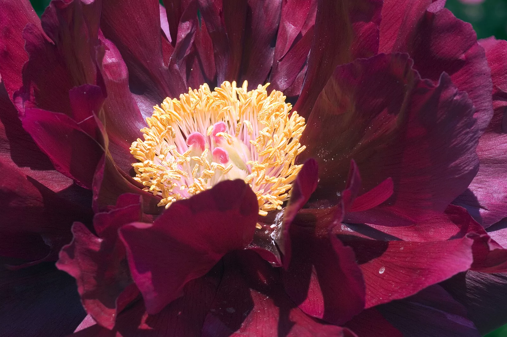

HORTUS MANUS
手部温室
手 部 温 室
MOVE HANDS · AWAKEN THE BLOOM
ESC
退出 / EXIT
PAEONIA SUFFRUTICOSA · SPECIMEN I · PLATE I
I / VII
花窗
Frame
Paeonia suffruticosa · 芍药科
FRAME I · 指尖花窗
GESTURE IDLE · 光照就绪
把手放进光里。
框
FRAME
开
OPEN
拳
FIST
采集
COLLECT · F
1–7 换花 · Q/W/E/R 兼容 · X 换季 · C 清屏 · G 幽灵手 · S 声音 · D 视图 · ? 帮助 · ESC 退出